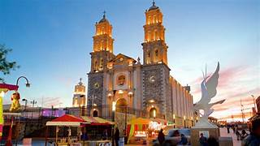
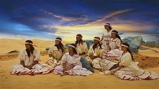
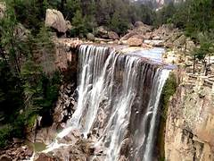
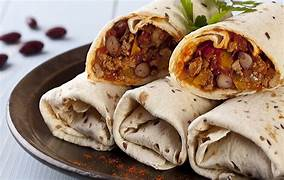

Chihuahua es el estado más grande de México en términos de extensión territorial. Su geografía es diversa, con paisajes que van desde desiertos áridos hasta altas montañas y cañones profundos. La Sierra Madre Occidental atraviesa el estado, ofreciendo vistas espectaculares y oportunidades para actividades al aire libre como senderismo, escalada y observación de la naturaleza.

Chihuahua es hogar de la etnia tarahumara, también conocida como rarámuri, que habita principalmente en la región de la Sierra Tarahumara. Los tarahumaras son conocidos por su rica cultura y tradiciones, incluyendo sus impresionantes habilidades en la carrera a pie y su artesanía, como las coloridas cestas de pino y las textiles tejidas a mano.

Chihuahua alberga algunas de las cascadas más impresionantes de México. Las Cascadas de Basaseachi, ubicadas en la Sierra Tarahumara, son las segundas cascadas más altas de México, con una caída de aproximadamente 246 metros.

La gastronomía de Chihuahua está influenciada por su ubicación en el norte de México y su cercanía con la frontera con Estados Unidos. Algunos de los platillos más representativos incluyen el asado de carne, los burritos, los tamales norteños, los chiles rellenos y los quesos locales, como el queso menonita, que es producido por la comunidad menonita en la región.

Notas relevantes:
En Chihuahua se encuentra la ciudad de Juárez, la cual es la frontera más poblada del
mundo.
El estado alberga la Barranca de Copper Canyon, una serie de cañones que son más profundos que el Gran
Cañón del Colorado.
Chihuahua es conocido por su producción de ganado vacuno y por ser el lugar de nacimiento
del Chihuahua, la raza de perro más pequeña del mundo